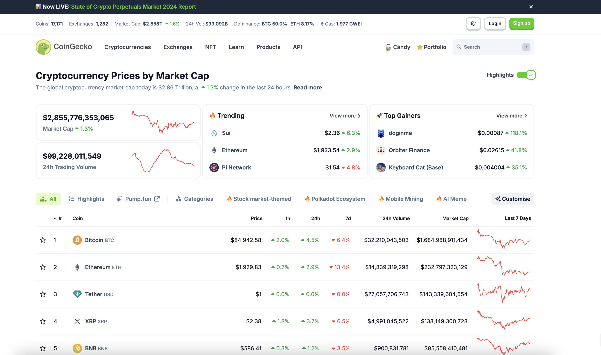
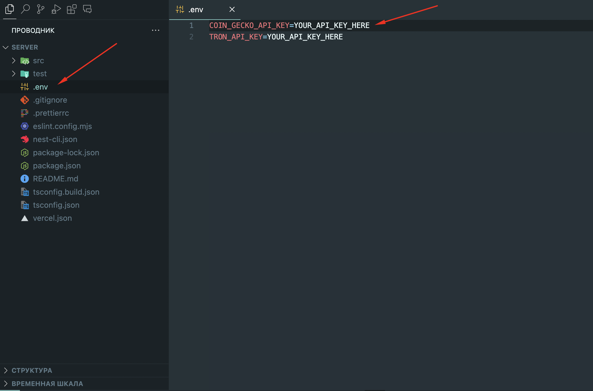
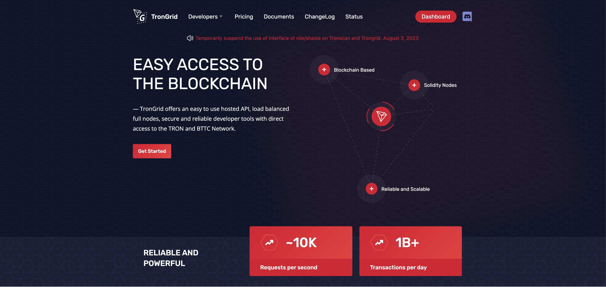
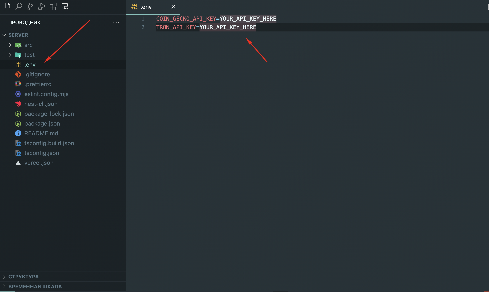

CoinSafe - Tron TRC20 Crypto Wallet by George_FX v1.0
CoinSafe - Tron TRC20 Crypto Wallet
Thank you for purchasing my theme. If you have any questions that are beyond the scope of this help file, please feel free to email via my user page contact form here . Thanks so much!
Before setting up the project, you should have a basic understanding of the following: Javascript, Nest.js, Node.js, npm for more information about the above topics, you can visit the following links: Javascript Nestjs Node.js npm
You need to get the following API keys to run the project:
1. Install environment
Your computer should have Node.js and npm installed to manage the dependencies. You can download Node.js (which includes npm) from the following link: Node.js

2. Coin Gecko API
You’ll need to register on CoinGecko and obtain an API key.
Once you have it, update the .env file with your new key.
3. Trongrid API
You’ll need to register on Trongrid and obtain an API key.
Once you have it, update the .env file with your new key.
4. Install dependencies
After updating the .env file, you need to install the project
dependencies.
You can do this by running the following command in the project root
directory:
npm install
5. Run the project
Once you have updated the .env file with your API keys, you can run
the project using the following command:
nest start --watch
This command will start the Nest.js server and watch for any changes
in the project files, automatically restarting the server when changes
are detected.